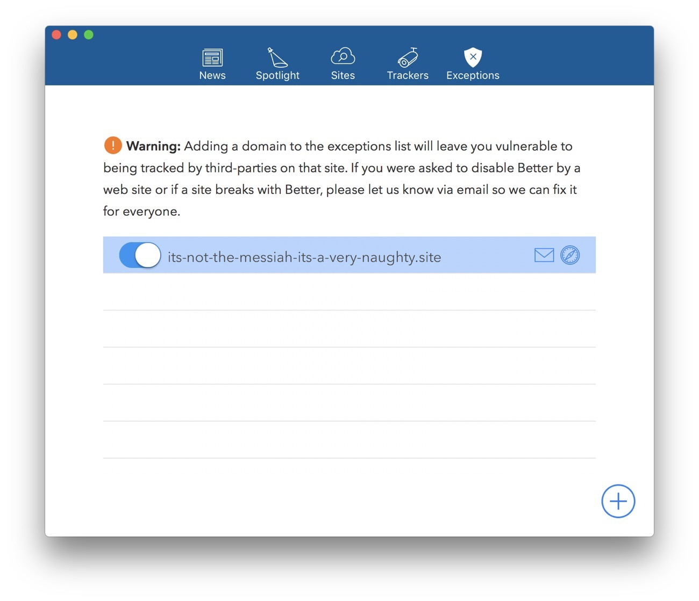

Better Update 2017.1
12th April, 2017 —
Last week we released a big update for the Better iPhone, iPad and Mac apps, 2017.1
Most importantly, we really worked on the accessibility support for both iOS and macOS. This included adding full support for Dynamic Type.
Exceptions
Our most requested feature was Exceptions, and after a lot of work from Aral, you can now turn Better off for certain sites. It’s important to know that adding a domain to the exceptions list will leave you vulnerable to being tracked by third-parties on the site. So you should not add sites just because they ask you to “whitelist” them.
For when a site doesn’t play nicely with Better, or asks you to disable Better, we’ve added an Email Us button on the Exceptions screen. This makes it easy for you to alert us about a site so we can fix it for everyone. Using these reports, we are now focusing our efforts on maintaining an up-to-date and reliable block list.
The best way to keep up with Ind.ie and Better is to join the Ind.ie forum, but you can also follow us on Mastodon, Twitter and even Facebook.